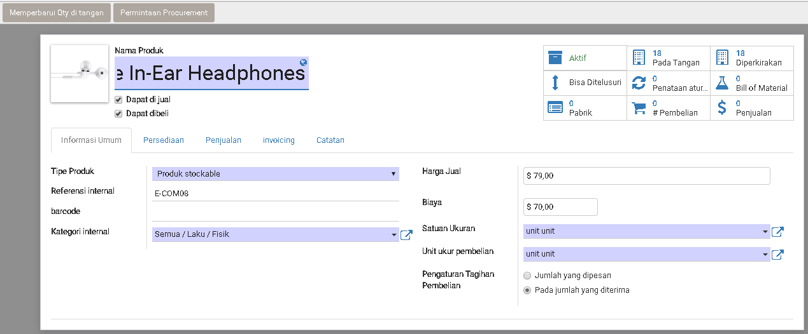
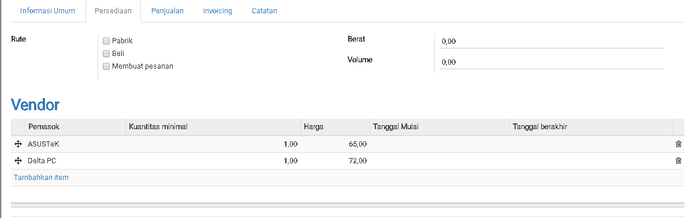
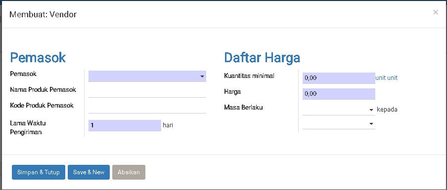
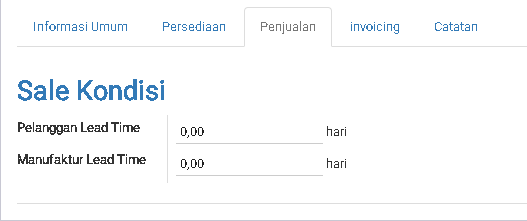
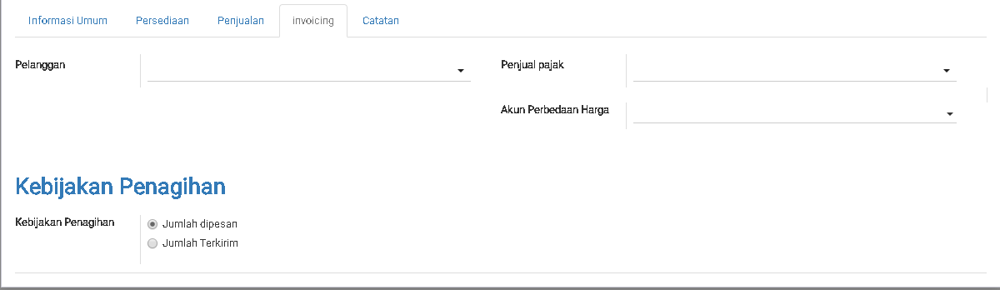

Product
Product adalah basic dari segala proses yang ada di dalam 1 perusahaan. Untuk menentukan proses akan bisa jalan dengan lancar jadi kita harus hati-hati melakukan penambahan product.

Basic Setting
| Field | Required | Description | Default |
|---|---|---|---|
| Nama Product | Yes | ||
| Dapat di jual | - | Produk ini di pakai untuk dijual? | Yes |
| Dapat di beli | - | Produk ini di pakai untuk dibeli? | Yes |
Informasi Umum
| Field | Required | Description | Default |
|---|---|---|---|
| Tipe Product | Yes | Product Stockable Product yang akan di opnum |
Product Stockable |
Dapat di konsumsi Produk yang di konsumsi tidak untuk opnum |
|||
ServiceProduk yang bersifat servis |
|||
| Referensi Internal | No | Kode Barang | |
| Kategori Internal | Yes | Kategori barang | |
| Harga Jual | No | Harga yang di pakai untuk membuat sale | 0.00 |
| Biaya | No | Biaya untuk produk ini | 0.00 |
| Satuan Ukuran | Yes | Satuan dasar yang di pakai oleh Gudang untuk melakukan stock opnum. |
Unit |
| Unit ukur Pembelian | Yes | Satuan yang di pakai untuk membeli produk ini dari supplier. Saos Tomat memakai "Satuan Ukuran Botol"tetapi membelinya dengan satuan ukuan "Lusin" |
Unit |
| Pengaturan Tagihan Pembelian | Yes | Jumlah Yang di PesanWaktu membuat pembayaran ke supplier mengunakan quantity PO |
Pada Jumlah yang di terima |
Pada jumlah yang di terimaWaktu membuat pembayaran ke supplier mengunakan quantity actual receiving |
Persediaan
Kegunaan Persediaan adalah menentukan cara penyediaan product ini.
Untuk teori tentang penyediaan inventory bisa ke topic Inventory/Persediaan

| Field | Required | Description | Default |
|---|---|---|---|
| Rute | No | PabrikPenyediaan lewat Produksi |
Beli |
BeliPenyediaan lewat beli sama vendor |
|||
Membuat PesananPenyediaan bila dapat orderan dari sales order |
|||
| Berat | No | Berat Produk ini | 0.00 |
| Volume | No | Volume Produk ini | 0.00 |
Vendor
Tabel ini diisikan untuk menginformasikan vendor yang dapat supply product ini:
Note:
Tabel ini akan dipakai oleh system menentukan vendor pada kasus di bawah ini:
1. Rute di pilih "Beli" dan "Membuat Pesanan" bersamaan".
Waktu mendapat "Sale", system akan auto generasi "Draft Purchase Order".
2. Ada menentukan Minimun Stock Rule

| Field | Required | Description | Default |
|---|---|---|---|
| Pemasok | Yes | Vendor yang menyuplai product ini | |
| Nama Produk Pemasok | No | Di isi bila nama produk vendor tidak sama dengan nama internal kita | |
| Kode Produk Pemasuk | No | Di isi bila Referensi Internal beda sama kode produk vendor |
|
| Lama Waktu Pengiriman | Yes | Berapa hari yang di perlukan vendor untuk mengirimkan barang sampai di tempat kita | 1 |
| Kuantitas Minimal | Yes | Ini di gunakan waktu kita ada setting Minimun Stock Rule. System akan membuat Draft Purchase Order sewaktu "On-Hand Qty" di bawah kuantitas ini |
0 |
| Kuantitas Minimal | Yes | Kuantitas minimal yang kita perlu Purchase Order ke vendor | 0 |
| Harga | Yes | Harga yang di jual oleh vendor ini. Bila isi 0, user bisa sesuaikan harga di purchase order |
0 |
| Masa Berlaku | Yes | Settingan Kadaluarsa untuk harga dari vendor ini | 0 |
Penjualan

| Field | Required | Description | Default |
|---|---|---|---|
| Pelangganan Lead Time | No | Berapa hari yang di perlukan untuk delivery produk sampai ke tujuan customer.Ini untuk menentukan tanggal pengiriman. Formula: tanggal pengiriman= Tanggal Konfirmasi Sales Order + Pelanggan Lead Time Contoh: Tanggal Konfimasi: 10 June 2018 Pelangganan Lead Time: 12. Jadi, Tanggal Pengiriman adalah: 22 June 2018. |
0 Note: 0 artinya pengiriman pada hari ini |
| Manufaktur Lead Time | No | Berapa hari yang di perlukan untuk delivery produk sampai ke tujuan customer.Ini untuk menentukan tanggal pengiriman. Formula: tanggal pengiriman= Tanggal Konfirmasi Sales Order + Pelanggan Lead Time Contoh: Tanggal Konfimasi: 10 June 2018 Pelangganan Lead Time: 12. Jadi, Tanggal Pengiriman adalah: 22 June 2018. |
0 Note: 0 artinya pengiriman pada hari ini |
Invoicing
Untuk tab ini biasa tanggung jawah orang Akun yang membuat setting

| Field | Required | Description | Default |
|---|---|---|---|
| Pelanggan | No | Pajak yang di pakai untuk pembelian | |
| Penjual Pajak | No | Pajak yang di pakai untuk penjualan | |
| Akun Perbedaan Harga | No | Akun yang dipakai bila terjadi perselisihan harga waktu jual/beli | |
| Kebijakan Penagihan | No | Jumlah di Pesan : Menagih sesuai kuantitas yang di order customer |
Jumlah di pesan |
Jumlah Terkirim : Menagih sesuai kuantitas yang Terkirim ke customer |
Catatan
| Field | Required | Description | Default |
|---|---|---|---|
| Deskripsi untuk Kutipan | No | Nama/Deskripsi yang di pakai waktu di terakan di Sales Order | |
| Deskripsi untuk Penjual | No | Nama/Deskripsi yang di pakai waktu di terakan di Purchase Order | |
| Deskripsi untuk hasil | No | Nama/Deskripsi yang di pakai waktu di terakan di Picking List(Inventory) |